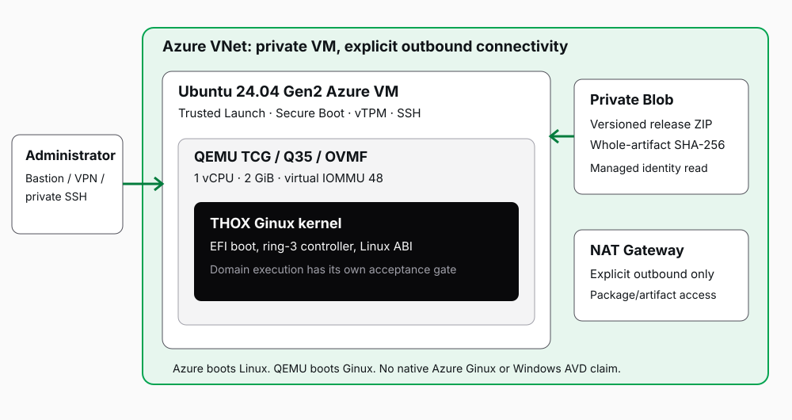

Azure deployment / engineering guide
ThoxOS Ginux Azure variant
Build the customized research kernel, provision a private Azure Linux host, and preserve the evidence boundary from local build to cloud acceptance.
01 / outcome
A complete build path with a clear Azure boundary
The Azure variant places the customized THOX Ginux kernel inside QEMU on an Ubuntu 24.04 Gen2 Azure VM. Azure boots and provisions the Linux host; QEMU supplies the Q35, OVMF and virtual devices that Ginux currently understands. The supplied package provides the kernel build, integrity-bound release artifact, private-VM infrastructure, managed-identity bootstrap and acceptance workflow.
Product stage: engineering candidate. Documentation status: DRAFT. Actual kernel, packaging and local test outcomes appear in the evidence table. Azure deployment is not claimed without a connected subscription and a successful live acceptance run.
| Requested idea | Implemented route | Boundary |
|---|---|---|
| Customized kernel | THOX Ginux EFI with source/patch provenance | A built EFI is not native Azure OS support. |
| Azure deployment | Ubuntu Gen2 host plus nested QEMU TCG guest | No Hyper-V driver support is invented for Ginux. |
| Customized master image | Customize and accept the Linux host, then capture through Azure image tooling | The linked Windows AVD procedure does not produce a Linux AVD session host. |
| Interactive demo | Private SSH/Bastion to Linux; launch the Ginux serial console | No public web terminal, RDP listener or unauthenticated control plane. |
Why the linked master-image article is a reference, not the build recipe
The Microsoft article covers Windows Azure Virtual Desktop images, including Windows software and registry preparation. Azure Virtual Desktop session-host prerequisites list Windows operating systems. Linux remote desktops use a separate VM/VDI approach. This variant uses the same disciplined image lifecycle: build, customize, verify, generalize only when appropriate, and capture. It does not copy Windows registry, FSLogix or AVD agent steps into Ginux. [S01–S03]
ThoxOS remains the operating and intelligence platform; MeshStack connects authorized resources, and ThoxWork organizes coordinated work. This research kernel package does not by itself establish running AI, mesh or workspace services inside Ginux.
02 / architecture
Two kernels, explicit trust boundaries

| Layer | Profile | Responsibility |
|---|---|---|
| Azure host | Ubuntu 24.04 Gen2; Standard_D4s_v5; 128 GiB OS disk | Supported Azure boot, provisioning, SSH and synthetic network/storage drivers. |
| Host protection | Trusted Launch; Secure Boot and vTPM | Protects the Azure Linux host. It is separate from Ginux guest boot/catalog signatures. |
| Research VM | QEMU TCG; Q35/OVMF; one vCPU; 2 GiB RAM | Supplies the validated guest hardware model. |
| Ginux guest | THOX EFI; 48-bit virtual IOMMU; modern virtio block/network | Independent Rust kernel and administration controller. |
| State | Sparse 64 GiB guest volume in dedicated user state | Retains guest configuration/cache; it is not a 64 GiB Azure managed disk allocation. |
Network and identity
The template gives the VM no public IP. An existing private route, VPN, peering or Bastion provides administrative access. A user-assigned managed identity reads one private Blob container through an explicit data-plane role. The artifact ZIP digest is pinned independently of that identity. No SAS, PAT, private SSH key or IMDS access token belongs in ARM parameters, custom data, logs or this guide.
Explicit NAT supplies package/artifact egress; NSG rules do not provide NAT. Dsv5 NICs enable Accelerated Networking. This size has no GPU. TCG avoids nested virtualization; optional KVM needs a separately supported profile and actual /dev/kvm evidence. Never silently disable Trusted Launch. [S06–S08, S11]
03 / prerequisites
Resolve the deployment inputs before provisioning
| Input | What to supply | Checks before use |
|---|---|---|
| subscription_id | The authorized THOX Azure subscription | The CLI account must match the intended tenant and subscription. |
| resource_group, location | A dedicated deployment resource group and allowed region | Record its purpose, expected cost and cleanup owner. |
| vm_name, admin_username | Unique VM and Linux admin names | Use the repository validation rules; do not reuse a production target. |
| ssh_public_key_path | An existing administrator public key file | Public key only. Keep private keys outside the package and parameters. |
| storage_account, storage_resource_group | An authorized existing private Storage account | Confirm network access from the VNet, TLS and container policy. |
| container | An existing private artifact container | The CLI derives a content-addressed blob name from the full ZIP SHA-256 and verifies upload readback. |
| image_version | An exact resolved Ubuntu Marketplace image version | Do not leave latest or an authoring placeholder in the deployment plan. |
| Private access | Default RunCommand acceptance; optional private SSH/Bastion | Set enable_private_ssh for interactive access. Optional enable_bastion creates an additional billable Standard Bastion service; no public VM IP. |
Access needed by the operator
The authenticated operator needs authority to create the resource-group resources and assign/use the managed identity and its container-scoped Blob Data Reader role. Data-plane upload permission is distinct from Azure resource creation. Role assignment often needs additional RBAC administration authority. A subscription Contributor assignment alone must not be assumed to grant every operation.
az account show
az account set --subscription "$THOX_AZURE_SUBSCRIPTION_ID"
python3 azure/deploy.py resolve-image \
--config azure/deployment.example.jsonSet THOX_AZURE_SUBSCRIPTION_ID to the approved subscription ID. Inspect the selected account and use the same exact ID in the configuration. The resolve-image subcommand prints available source image information through Azure CLI; copy an exact approved version into azure/deployment.example.json or a separate private operator configuration. The subsequent prepare step writes the resolved, non-secret plan.
04 / build
Build the kernel, then bind the release bytes
Work from the reviewed THOX source revision. Preserve the original Ginux Apache-2.0 license and notice and all corresponding source modifications. The kernel build uses Rust 1.99.0 and the x86_64-unknown-uefi and x86_64-unknown-none targets, GNU Make, Clang and the pinned Ginux source.
rustup toolchain install 1.99.0 --profile minimal \
--component clippy --component rustfmt
rustup target add --toolchain 1.99.0 \
x86_64-unknown-uefi x86_64-unknown-none
bash module-ginux/scripts/build-native.shThe native build writes module-ginux/artifacts/GINUX.EFI, build-receipt.json, SHA256SUMS and attribution. The receipt binds the upstream source, ordered THOX banner/Azure/startup patches, lockfile and compiled payload. Startup fixes cover Linux auxv stack layout, local TCP lifetime, detached output/restart and an invalid-pointer fixture. A rebuild needs its own receipt and acceptance; byte-for-byte reproducibility is not assumed.
(cd module-ginux/artifacts && sha256sum --strict -c SHA256SUMS)
export THOX_RELEASE_ZIP=/absolute/path/THOX_Ginux_Azure_Release.zip
python3 azure/package_release.py --source . \
--output "$THOX_RELEASE_ZIP" \
--source-commit "$(git rev-parse HEAD)"The packaging command creates THOX_Ginux_Azure_Release.zip from a reviewed source checkout; --source-commit must identify that source. Git excludes GINUX.EFI: the runtime ZIP contains the actual compiled payload. Only required kernel, launcher, installer and provenance files enter its allowlist. The release manifest binds every admitted file. Azure verifies the complete ZIP SHA-256 before extraction or execution.
| Release root path | Purpose |
|---|---|
| module-ginux/artifacts/GINUX.EFI | Actual compiled kernel payload. |
| module-ginux/artifacts/build-receipt.json and SHA256SUMS | Compile provenance and exact payload integrity inventory. |
| module-ginux/artifacts/GINUX_LICENSE and GINUX_NOTICE | Preserved upstream attribution. |
| module-ginux/scripts/run-vm.sh | Validated, constrained QEMU guest launcher. |
| ssd-module/install_host.py and preflight.py | Verified installation as ordinary host files. |
| release-manifest.json | Release allowlist and per-file hashes. |
Publish the release only to the intended private storage container. Do not place credentials, source agent instructions, template masters, private user data or temporary debug images inside the executable artifact.
05 / deploy
Prepare locally, upload privately, review, then deploy
Run these commands from the repository root on a machine with Azure CLI, Python and the authorized Azure login. Set THOX_RELEASE_ZIP to the actual generated ZIP path. Edit the configuration file with real operator inputs before preparation.
export THOX_RELEASE_ZIP=/absolute/path/THOX_Ginux_Azure_Release.zip
export THOX_DEPLOY_PLAN=/absolute/path/thox-ginux-deployment-plan
python3 azure/deploy.py prepare \
--config azure/deployment.example.json \
--artifact "$THOX_RELEASE_ZIP" --out "$THOX_DEPLOY_PLAN"
python3 azure/deploy.py upload \
--config azure/deployment.example.json \
--artifact "$THOX_RELEASE_ZIP"The artifact object name is content-addressed under sha256/<ZIP digest>/; no blob_name field is accepted. Check the plan subscription, region, image version, private access, NAT and identity scope. Upload must match its digest. First deployment requires a dedicated empty compute resource group; retries refuse any resource without matching thox-project and thox-deployment ownership tags. Names alone never establish ownership.
python3 azure/deploy.py validate --plan "$THOX_DEPLOY_PLAN"
python3 azure/deploy.py what-if --plan "$THOX_DEPLOY_PLAN"
python3 azure/deploy.py deploy --plan "$THOX_DEPLOY_PLAN"Server-side validate checks the ARM deployment against Azure. What-if previews planned infrastructure changes. Deploy creates billable resources. Review validation and what-if output before that step. Do not accept an unexpected public endpoint, broad role grant, production resource replacement or a different subscription.
Bootstrap behavior
Cloud-init installs the host dependencies and runs the integrity-bound bootstrap. The managed identity obtains a short-lived IMDS token at runtime, reads the private artifact, verifies the complete ZIP digest and strict manifest, and invokes the trusted host installer. Tokens are kept out of normal output. Role assignments can take time to propagate; bounded retries belong to the bootstrap, with clear failure logging.
A successful ARM deployment establishes infrastructure provisioning only. Cloud-init completion, kernel console boot, domain behavior and persistence each require their own evidence. Do not mark the deployment accepted from an Azure resource status alone.
06 / acceptance
Verify the host, the payload and the running kernel separately
The default template keeps SSH ingress closed and creates no Bastion. Use Azure RunCommand to retrieve acceptance receipts without opening a VM public endpoint. Set the resource-group and VM-name variables from the reviewed configuration. For an interactive console, explicitly enable the narrow private SSH rule and an existing private route or the optional billable Standard Bastion service.
az vm run-command invoke \
--subscription "$THOX_AZURE_SUBSCRIPTION_ID" \
--resource-group "$THOX_AZURE_RESOURCE_GROUP" \
--name "$THOX_AZURE_VM_NAME" --command-id RunShellScript \
--scripts \
'cloud-init status --wait' \
'cat /opt/thox/ginux/azure-install-receipt.json' \
'cat /var/log/thox-ginux/guest-smoke.json'After private SSH/Bastion access is established, run sudo -iu thoxginux thox-ginux for the actual guest terminal. Azure Serial Console reaches Ubuntu, not automatically Ginux. The Azure bootstrap records its smoke test in /var/log/thox-ginux/guest-smoke.json and guest-smoke.log. Its installer receipt is separate from the Linux host-install receipt. The guest account home is /var/lib/thox-ginux. At ginux>, begin with status, components, domain list and help. End with shutdown for a clean guest exit. Do not close the host or deallocate the VM while guest configuration is being written.
| Gate | Evidence to retain | Acceptance boundary |
|---|---|---|
| Host provisioned | Azure deployment outputs, image version, cloud-init result | No public IP; intended identity and resource group. |
| Artifact verified | ZIP SHA-256, manifest, EFI and receipt hashes | Match the reviewed release, not merely a successful HTTP download. |
| Controller boot | Exact serial banner and successful status/help/shutdown transcript | A kernel console pass does not prove arbitrary Linux programs. |
| Domain execution | Embedded init marker, detached state, stop/start/restart and full errors | Bind the actual test to the delivered EFI; arbitrary Linux compatibility remains separate. |
| Persistence | Clean shutdown and separate reboot/recovery transcript | Do not infer writable Linux-domain filesystem durability from saved configuration. |
| Azure host acceptance | Private SSH reachability, reboot, disk/state behavior, policy and costs | Local QEMU tests do not replace live Azure acceptance. |
07 / evidence
Current tests and acceptance receipts
Current local results are separate from live Azure deployment. Retain source, EFI hash, commands and environment for each pass. Azure architecture, implementation and kernel diagnosis agents contributed; no external acknowledgement is implied.
| Area | Actual status |
|---|---|
| Kernel Build | Passed: final customized EFI built with Rust 1.99.0; 12,507,648 bytes. SHA-256 3ebcc9043ef9dc8b7e75abc15b113a5810c8d39c0ad47143476a41caed24d5ba. |
| Controller And Persistence | Passed: 17 cold-boot and 5 recovered-boot commands on the delivered EFI; clean shutdown and same-volume saved-configuration recovery. |
| Linux Domain Execution | Passed: embedded /sbin/init, detached PID 100, stop/start/restart and failure recovery. Minimal embedded workflow only; not broad Linux compatibility. |
| Packaging And Infrastructure | 120 unit checks passed: stack 5, libraries 53, module 17, SSD 15, Azure 30. Strict Resources schema failed; 13 adapted checks passed. Format/clippy passed. |
| Azure Deployment | Not run: no Azure login, server ARM validation, what-if or cloud deployment. Local QEMU does not establish Azure acceptance. |
| Image Capture | Not run: no accepted Azure image-builder, Gallery version or clone. Docker, KVM and physical KnightHub/SSD boot also remain unrun. |
Validation strings are generated from validation.json alongside this guide. Change them only after reviewing the corresponding current source/hash-bound logs. Prior-session receipts remain historical and are not silently promoted to new Azure results.
Authentic current lifecycle evidence
Build profile: THOX Azure Compute Edition (QEMU/TCG)
ginux> domain start thoxprobe
thoxprobe: running (detached)
100 0 R thoxprobe:init
GINUX_KERNEL_OKExact lines from evidence/azure/lifecycle-cold.log for the EFI identified above. lifecycle-results.json records 17 cold-boot and 5 recovery commands and both log hashes. This is local QEMU proof; Azure, Docker, KVM and physical acceptance remain unrun. The October 28 predecessor evidence is preserved separately.
08 / master image
Customize and capture the Linux host after acceptance
The initial Azure route uses an endorsed Marketplace Ubuntu image and cloud-init. That is a reproducible deployment definition, not a prebuilt VHD containing a native Azure Ginux kernel. A reusable THOX master image is a separate output produced from an accepted disposable Linux image-build VM.
- Record the exact Ubuntu image version, host package inventory, THOX artifact hash, source revision and successful acceptance results.
- Customize only the Linux host surfaces required by the product. Install approved themes/apps or model runtimes as separately versioned components; preserve licensing and update responsibilities.
- Remove build credentials, transient IMDS/session material, test users and private data. Decide deliberately whether the distributed image retains only immutable kernel payload or also seeded guest state.
- Stop all guest instances cleanly. Confirm no guest volume is in use. Do not bake test passwords, private SSH keys or machine identity into an image.
- Generalize only a disposable image-build VM using the applicable Microsoft Linux preparation procedure. Deprovisioning can remove accounts and invalidate access; never run it automatically against the operational demo VM.
- Capture into an explicitly named Azure Compute Gallery image definition/version with the correct generation/security capabilities. Retain the managed image/version IDs, source disk identity and artifact hashes.
- Deploy a fresh VM from that captured version and repeat private access, cloud-init/provisioning, kernel, reboot and persistence checks before distributing it.
VHD export rules
If an offline VHD is required, use the Azure Linux image-preparation workflow and its fixed VHD, boot/provisioning and alignment requirements. A GINUX.EFI executable or QEMU raw guest volume is not a valid Azure OS VHD. Native Azure Ginux support would require Hyper-V/VMBus storage and network drivers plus Azure provisioning behavior that this variant does not supply. [S04–S05]
A captured Linux host image does not become a Windows AVD session host. A graphical Linux desktop is a separate managed-VM desktop integration, and GPU rendering requires a GPU size, drivers and an actual rendering test.
Keep image capture and cleanup explicit. Retain a rollback version and deployment manifest. Do not overwrite a stable image version or delete a production gallery/resource group as part of an example command.
09 / recovery and sources
Recover without widening access or losing evidence
| Symptom | Check | Bounded response |
|---|---|---|
| Blob download denied | Identity assignment, container scope, RBAC propagation and storage network policy | Correct the intended identity/scope; never make the container public or paste a SAS into cloud-init. |
| Packages cannot download | NAT attachment, route/NSG/firewall and DNS | Restore the approved egress path; NSG allow rules alone do not provide NAT. |
| Cloud-init incomplete | cloud-init status and restricted bootstrap logs | Retain failure output; retry the documented unit/step after cause is fixed. |
| No SSH route | Existing private connectivity, Bastion target and approved source CIDR | Keep the VM private. Do not add 0.0.0.0/0 port22 as a shortcut. |
| Ginux IOMMU/EFI panic | Actual QEMU command and matching OVMF pair | Use the tested 2 GiB/48-bit-IOMMU profile; preserve kernel validation. |
| Domain start fails | Named domain, image identity and full serial output | Keep the runtime gate failed until a source-bound fix passes. |
| Unexpected running costs | Dedicated resource-group inventory and owner | Deallocate or remove only the confirmed disposable deployment through an explicit operator action. |
Cleanup must target the dedicated resource group recorded in the reviewed plan. List its resources first, confirm that shared storage/Bastion/gallery resources are outside that deletion scope, then perform an explicit Azure CLI or portal deletion. Preserve the final logs, artifact hashes and image/deployment IDs before cleanup.
Sources and revision
Primary references below were reviewed for this engineering guide on 2026-10-29. Microsoft documentation can change; deployment-time ARM validation and regional/SKU availability remain required.
- S01 Microsoft: Prepare and customize a VHD image for Azure Virtual Desktop
- S02 Microsoft: Azure Virtual Desktop prerequisites
- S03 Microsoft: Linux remote-desktop options
- S04 Microsoft: Prepare a generic Linux image for Azure
- S05 Microsoft: Hyper-V driver troubleshooting for Azure Linux VMs
- S06 Microsoft: Dsv5 VM series
- S07 Microsoft: Default outbound access and explicit outbound connectivity
- S08 Microsoft: Trusted Launch
- S09 Microsoft: Cloud-init on Azure Linux VMs
- S10 Microsoft: Azure Bastion SSH to Linux
- S11 Microsoft: Nested virtualization
- S12 THOX source baseline